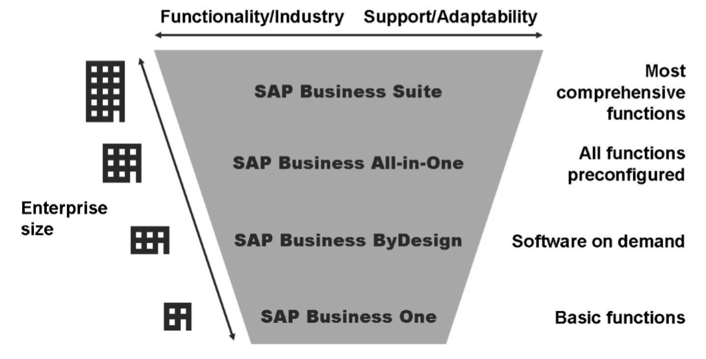
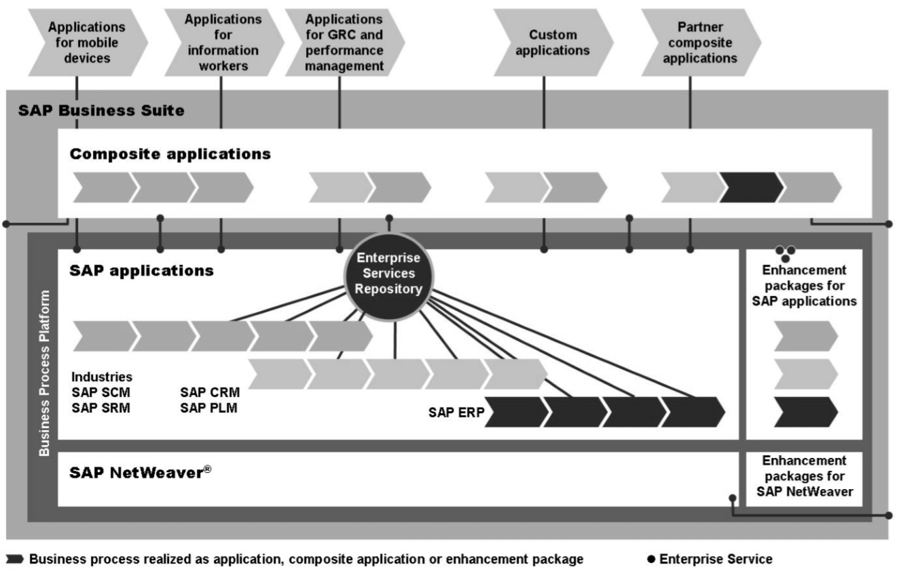

SAP una visión de Negocio
Edgar Mikhail Chopen Sapon
mikhailchopen@gmail.com
Estudiante de Ingeniería en Ciencias y Sistemas - USAC
Palabras clave: ERP, SAP, Software de administración de recursos.
En una época donde el modelo de negocio y alcance operativo era definido y estructurado por la capacidad del personal, sucursales y sistemas computacionales no flexibles ni escalables, una barrera de tecnología e infraestructura que, si bien permitió a las empresas alcanzar un capital y aumentar su área operativa, implicaba aumentar proporcionalmente la cantidad de empleados y sucursales, dificultando la minería de datos en busca de un patrón de mercado, siendo no suficiente para un modelo de negocio globalizado, recursos y control de mercado. Y es de esta necesidad que nacen las herramientas ERP (Enterprise Resource Planning/sistemas de planificación de recursos empresariales), en el cual SAP oriento su ERP a servicios y no solo para producción e inventario como antiguamente era un ERP. SAP abarca áreas de logística, ventas, contabilidad, RRHH, entre otros, optimizando los recursos en las actividades.
SAP ORIGEN
Fue desarrollado por un grupo de 5 ex trabajadores de IBM, dicho programa inicio como una pequeña compañía alemana en la fecha de 1972, su nombre proviene de Systems, Applications & Products por su nombre en inglés. Los fundadores tenían la visión de crear un programa el cual permitiera que los datos fuesen accesibles en tiempo real por los usuarios durante los procesos operativos, estando por encima de los tradicionales archivos para sincronizar las sucursales. Con el cual nace el ERP de SAP, el cual tiene como alcance controlar y planificar todos los recursos empresariales en la gestión de cada proceso interno, en las áreas de planeación, producción, ventas, logística, RRHH, entre otros. El producto R/3 de SAP es un conjunto de funcionalidades las cuales integran los procesos organizacionales, para lo cual trabaja en tiempo real los 3 niveles de interfaz, aplicación y base de datos, que son las 3 capas que describen la arquitectura cliente-servidor del sistema R/3 SAP.
SAP ofrece distintos productos los cuales están diseñados para todo tipo y tamaño de empresa, con lo que aseguran ajustarse a todo tipo de procesos y su continuo cambio.
SAP BUSINESS ONE
Es una herramienta completa he integrada con una interfaz similar a Windows, la cual ha sido desarrollada específicamente para empresas pequeñas y medianas, con menos de 100 empleados y 30 usuarios que buscan cubrir las áreas de negocio. Se distingue por su simple navegación y opciones de expansión, con su innovación de funciones Drag&Related y su integración con Microsoft Word y Excel. Esta versión permite administrar las áreas más importantes de un negocio como ventas, distribución y finanzas, en tiempo real.
SAP BUSINESS BYDESING
Es la última solución para empresas pequeñas y medianas entre 100 y 500 empleados, los cuales requieren de una solución y demanda de procesos que permita al mismo tiempo los beneficios de menores costos operativos, con la ventaja de integrar aplicaciones de punto a punto con el menor riesgo, garantizando las bases de una empresas enfocada y diseñada a una arquitectura de servicios.
SAP BUSINESS SUITE
Es la versión más completa de los productos SAP, que permite administrar completamente cada área de una empresa y sus puntos operativos. SAP Business Suite provee un espectro completo de soluciones de negocio, una infraestructura alta mente integra e interfaces para integración de productos No SAP.

Autor: SAP TAW10_1 ABAP
MÓDULOS
es un sistema ERP, el cual permite manejar todas las áreas de una empresa, esto a todos sus módulos MM, SD, DI, PP y PM.
Modulo MM (Materials Management)
principal modulo del ERP SAP y está diseñado para la logística de los productos, manejando stock y el movimiento de estos, es decir planificación, almacenamiento y compras.
Modulo SD (Sales & Distribution)
Diseñado para los procesos de ventas y entregas los cuales se relacionan con un cliente, también entra en la categoría de módulo de logística.
Modulo PP (Production Planning)
modulo en el cual se planifica todo lo relacionado al producto, en lo principal las plantas de fabricación esto en un mediano y largo plazo, lo cual constituye un MRP.
Modulo CO (Controlling)
Modulo para el control, el cual permite analizar los KPI respecto a la gestión interna en la empresa, relacionando costos y beneficios.
LENGUAJE DE PROGRAMACIÓN SAP
Cuenta con un lenguaje de programación interpretado para el desarrollo de aplicaciones en su sistema SAP R/3, llamado ABAP, el cual le permite desarrollar aplicaciones en la mayoría de los productos de SAP y utilizar cualquier base de datos a través de sus sentencias de OPEN SQL. Esto hace de ABAP un lenguaje 4GL (de cuarta generación). Si bien ABAP es un lenguaje de programación, este esta limitado a la creación de software para mejora, variaciones y nuevos procesos internos del negocio. Si bien no permite una interacción directa con usuarios finales de mercado, debido a su alto encapsulamiento para asegurar la seguridad de la información, permite la creación de RFC (Remote Function Call) las cuales proveen una interfaz de comunicación entre sistemas SAP, como lo sería un POS (Point OF Sale) SAP o PO (Process Orchestration) SAP como bus de integración, el cual permitiría la comunicación con sistemas No SAP.

Autor: SAP TAW10_1 ABAP
Programa ABAP
A un inicio SAP integro su lenguaje ABAP con una estructura Top-Down no orientada a objetos, que posteriormente fue orientado a objetos. La impresión de los resultados de un programa ABAP tiene distintos métodos, desde el más antiguo como lo sería un SAPSCRIPT, posterior un ALV permitiendo mayor interactividad al usuario, hasta reportes mas modernos que permite un mejor diseño de los mismos, como lo seria un SmartForm o un Adobe Form.
Código
"Nombre del programa, la z al inicio indica que es desarrollado por un usuario
report ZImprimirClientes.
"KNA1 es la tabla maestra de clientes
tables: KNA1.
"Es un select que integra un loop en la información devuelta
SELECT * FROM KNA1 ORDER BY name1.
"imprime el nombre y teléfono del cliente
WRITE: / KNA1-name1, ’ ’, KNA1-telf1.
ENDSELECT.
Conclusiones
En conclusión, SAP ERP abarca todo tipo de mercado y tamaño de empresa, ofreciendo una estructura orientada al servicio.
Por tanto, permite un control mas optimo sobre los procesos, gracias a su acceso en tiempo real.
Si bien, la implementación de un sistema ERP SAP, incurre en altos costos, como la misma implementación e integración de un personal cualificado, SAP asegura minimizar los costos operativos aumentando las ganancias.
Referencias
TAW10_1 ABAP workbench Fundamentals, SAP AG.
Autor: SAP - https://darsisit.com/sap/glosario-sap/